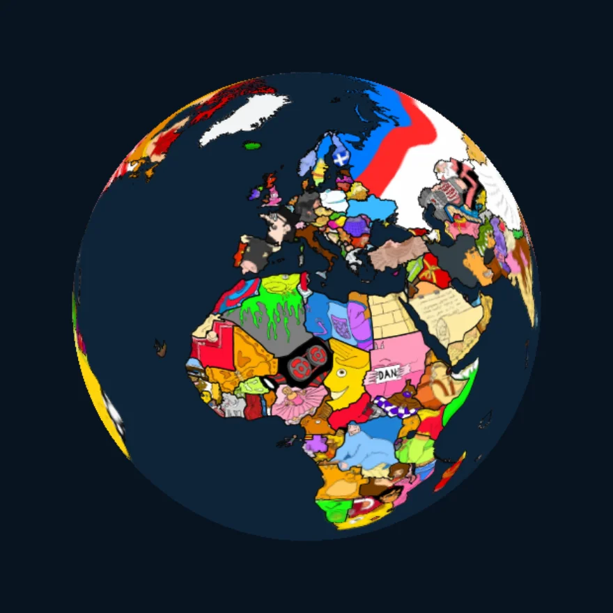
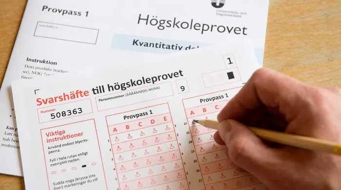
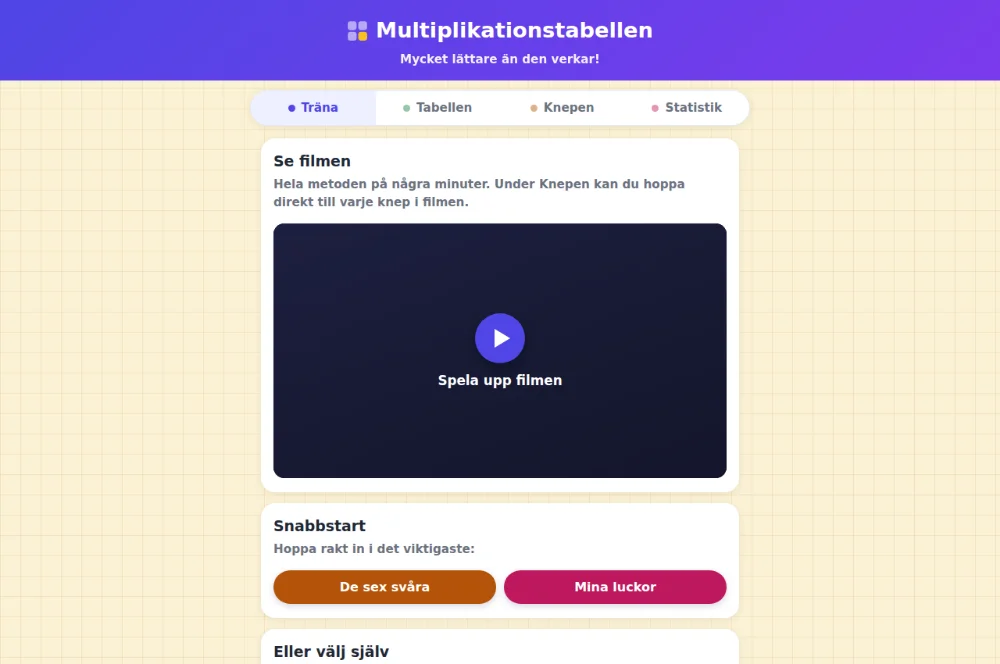

197 länder. Jag kan alla.

jonasgeografi.se↗
Alla världens länder på en snurrbar jordglob där varje land är ett eget litet konstverk. Utforska, quizza och res jorden runt — med minnesknep för varje land.
Världsmästare i att komma ihåg saker.
Tre appar. Noll kronor.
197 länder. Jag kan alla.

Alla världens länder på en snurrbar jordglob där varje land är ett eget litet konstverk. Utforska, quizza och res jorden runt — med minnesknep för varje land.

Gratis träning inför högskoleprovet: simulera gamla prov på tid, videogenomgångar och minnestekniker. Från Sveriges kanske mest rutinerade HP-skrivare.

Gångertabellen är lättare än den ser ut: med rätt knep är det bara sex tal kvar att memorera. Quiz, minnesbilder och smart repetition — utan inloggning.
Skaffa ett superminne!
En onlinekurs i minnesteknik. Lär dig metoderna jag använder — i din egen takt, hur många gånger du vill.
Till kursenMan tror det inte förrän man sett det.
Säg något. Jag kommer ihåg det.
Vill du boka en föreläsning för ett oförglömligt event? Skriv en rad om vad ni planerar — jag återkommer snabbt.
Tack. Det är sparat — på riktigt.